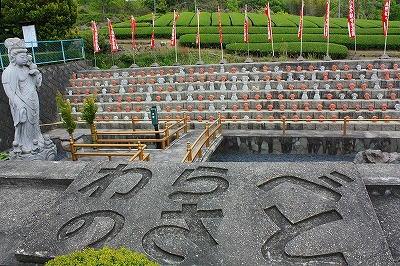

銭司聖天/京都府
京都府南部を流れる木津川。週末ともなると大勢の人が川原でお肉を焼くお祭りを繰り広げているのでおなじみの川だ。
そんな木津川沿いに大きなお寺がある。川と平行して走る関西本線からも良く見えるので前から気にはなっていたのだが、どうもこのお寺がかなりいい感じだというタレコミが届いたので行ってみることにした。
ロケーションとしてはこんな感じ。
川と平行して鉄道と国道が走っていて、その国道沿いにお寺はある。
背後は山と茶畑、眼前は木津川。
しかし目の前には巨大なクレーン屋さんがあって長閑な山里の雰囲気を一気に崩壊させちゃっていてある意味凄い光景です。
これだけ巨大なクレーンのアームが大量に積まれている光景も中々お目にかかれないので、ついついクレーン屋さんの方にばかり目が行ってしまいがち。
話逸れついでに、この川を１キロほど上ると、それはそれは素敵な採石場？がある。
八方にコンベアが延びたその姿はまるで蜘蛛、マシンの蜘蛛のようである。
で、ホントのマシン蜘蛛は↓コレね。
これ以上話が逸れると何のサイトかわからなくなっちゃうんで、本題のお寺に集中しましょうや。
ココのお寺は通称銭司聖天。銭司と書いて「ぜず」と読む。
看板には真っ先に金運向上と書いてある。
うむ。
余計な装飾を省き一番の関心事を最初に持ってくるとは潔き事この上なし。
侮れないぞ。
何でもこの地はかつて貨幣を鋳造していた地だったとかで銭司という地名になっているそうな。
まさに金運向上を願うにはこれ以上ない素晴らしい地名と言わざるを得まい。
ここのお寺は何と言えばいいんでしょうなあ…いわゆる天のお告げでつくられたお寺である。
詳しくは開祖である宮野英順というお方の著作「心に水を」を参考にされたし。
心に水を (上)
心に水を〈下〉
私？もっちろん読みましたとも。
内容としてはごく普通の主婦である宮野さんが天啓に導かれ様々な苦労をして銭司の地に一大寺院を建立するまでの汗と涙の物語。
ページ数の大半が西国三十三ヶ所と四国八十八ヵ所の巡礼記なのだが、それはそれとして一般人が様々な神秘体験によって信仰を司る側の人間になっていく過程が青森のカミサマ（ゴミソ）の入巫過程に似ていて興味深かった。
にしても判らんもんです。私のような信仰心ゼロどころか若干マイナス傾向にあるようなやさぐれ者でも或る日、天啓を受けて宗教者になったりするのだろうか？ないか…ないね…
まあ、色々見方はあろうが、ざっくり言えば生駒系の民間宗教者の祈願所が発展した形、ということになろうか。
境内に入る。想像していたよりも大きなお寺で、本堂以外にもたくさん見どころがありそうだ。
なにやら抽象的な彫刻作品などもあったりする。鐘楼なのか？
護摩堂には真っ赤な不動明王が鎮座していた。

さて、歩を進めると「わらべのさと」というエリアに至る。

空池のような場所に観音像が立ち、その向こうがひな壇になっている。
そこに並ぶのは大量の石像。
茶色いのは女の子。白いのはお地蔵さんとこれまた女の子。
まあ、要は水子供養なのだが、普通水子供養といえばお地蔵さんがメインなのだが、ここのメインは観音サマ。
男の子の姿が見えないのは何か理由があるのだろうか。つかお地蔵さんに見えるのが男の子なのか？
子供の人形がずらりと並んだひな壇と、その向こうに見えるのどかな茶畑の精神的コントラストが何とも物悲しい。
その後ろには巨石を組んだ人工の滝が。
ここで滝行をするのだろうか。何だか押し潰されそうな迫力がある。
そういえば金運アップはどこで？
で、本堂。
本尊は釈迦三尊像。
ちなみに幕に染め抜かれている違い大根は聖天信仰のシンボルである。
本堂の中では信者さんが人生相談を受けているご様子。
あんまり立ち聞くのも趣味がよろしくないので簡単に参拝だけすませて、と。
で、金運アップは？
本堂のお隣には聖天堂。
こちらが金運アップの本丸のようだ。おおお、ついに到達したぞ。
よおしっ！プルトニウムの先物取引で一攫千金だぁ！

巨大和同開珎がお出迎え。
和同開珎はこの地で鋳造されたとされる。これに金箔（有料）を貼り付けて金運アップ！…だそうです。
日本で最も和同開珎が似合う場所で金運向上祈願とは実に判りやすい。
お寺サイドとしても諸々思いはあるかも知れないが、バッサリ割り切ったあたりが凄く潔い！と思うんですけど。
その奥には巨大な大根のハリボテが。
先にも述べたが大根は聖天信仰の象徴でもある。その大根に願い事を書いて祈願成就といこうじゃないか！的なコーナー
みなさんここぞとばかりにレアな欲望をぶつけまくってます。
「宝くじで４億円が2009年度中に当たりますようにお願いします」ってやけに切羽詰ってるし、ドリームジャンボ宝くじでMAXでも３億なのに４億円を要求する辺りが妙にリアルですね。無理なら３億でもいいです…的な駆け引きを神仏相手に交渉してる感じが凄く好きです。
全面金運関係かと思ったが、意外とみんなが幸せに暮らせますように的なヌルい願い事も多かった。
イヤ、別に良いんですけど、銭司ですよ、和銅ですよ、ここはひとつ気取ったお願いなどさておいて思いっきり下卑たお金のお願いをしようじゃありませんか！
「ナンバーズ94連敗しました。１日でも早くみずほ銀行で換金できますように」…そう、それです！しかも切実です。リアルです。これぞ金運向上祈願の真骨頂でしょう。
「単位とバイトくれ！」…神仏なんだからタメ口は如何なものかと。教授や面接官にもこんな口のきき方では願いは叶いませんぞ！
「バカがなおりますように」…むぅ〜。ある意味一番難しいお願いかも…
私はこのチープで下世話な感じが例えようもなく好きだ。
何よりこのエリアには先ほどまでの仰々しい雰囲気や深刻な空気がない。
そう、最前の水子地蔵や抽象彫刻、本堂の人生相談には「銭やジェニや〜」的な俗っぽさが感じられなかったのだ。
俗っぽいのがイイというのも看も蓋もない言い方だが、アタシゃ断然そっちサイドすね。
さらにここのお寺のアイドル発見！
小さなお堂の中にはポツンと閻魔様が。
何でも木片に自分の心から捨て去りたい事物を書いて閻魔サマに処分してもらおう、という趣向。
閻魔サマが「さあ、どうぞ！」と手を差し伸べている先には火のついた木片入れが。


これは本来の閻魔サマの業務内容ではないのでは？
先ほどの観音サマｉｎ水子といい、ここの閻魔様といい、ここのお寺は仏教におけるお偉いさんを独自の解釈で配置転換しているようだ。
こんなトコでも内閣改造ですか？
情報提供は林輝彦さんです
2009.05.
珍寺大道場 HOME